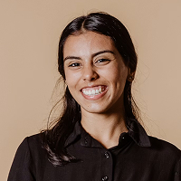

모바일 프로젝트 1 / 5
Design Approach
프로젝트마다 브랜드의 특성과 목표를 충분히 이해하고
리서치와 기획을 통해 해결해야 할 문제를 먼저 정의합니다.
정보를 쉽고 자연스럽게 전달할 수 있는 구조를 고민하며
완성도와 일관성을 갖춘 디자인을 만들어가고자 합니다.
- Web & Mobile Interface
- UI/UX & Product Design
- Wireframe & Prototype
- Design Systems & Components
- Branding & Visual Design
영상 삽입 영역
About Me
Values, mindset, and work style.
Open to Work
Ready for the next step

Work
- 2024
- ㈜ 트릴리온 디자이너
- 2022 - 2023
- 씨앤제이사인애드 디자이너
- 2022
- 더나은기획 디자이너
Education
- 2026
- (디지털디자인) 생성형 AI활용 웹디자인, UIUX, 웹퍼블리셔 과정
- 2021
- (그래픽디자인) 포토샵, 일러스트, 인디자인 과정
- 2021
- 영남이공대학교 패션디자인마케팅학과 졸업
Activities
- 2021
- 컴퓨터그래픽스운용기능사, GTQ · GTQ i · GTQ ID 1급
- 2023
- 전산세무 2급